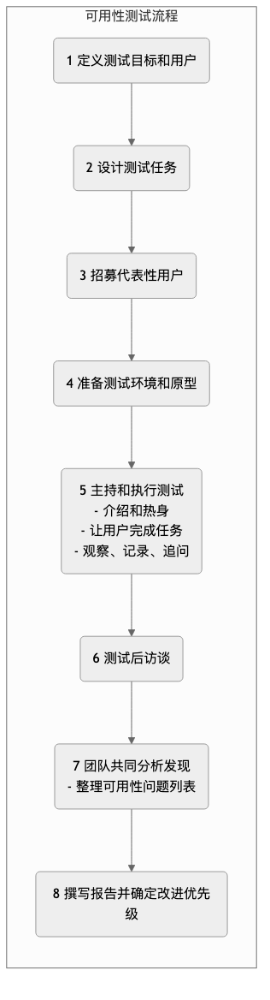

可用性测试¶
我们精心设计了一个自认为完美无缺的产品界面，但当真实用户第一次接触它时，却可能完全找不到那个我们觉得显而易见的按钮。可用性测试（Usability Testing） 是一种核心的、以用户为中心的定性评估方法，其根本目的在于，通过观察真实用户在尝试使用一个产品（或原型）来完成典型任务的过程，来发现设计中存在的可用性问题，并收集关于用户行为和主观感受的深度洞察。
可用性测试的精髓不在于“测试用户”，而在于“让用户来测试我们的设计”。它不是要看用户有多聪明，而是要看我们的设计有多么直观、易用和高效。它回答的核心问题不是“有多少用户点击了这个按钮？”，而是“为什么用户没有点击这个按钮？他们遇到了什么困难？他们当时的感受是怎样的？”。它是一面能够清晰映照出设计缺陷的镜子，是打造流畅、愉悦用户体验的必经之路。
可用性测试的核心要素¶
一次标准的可用性测试，通常包含以下几个关键组成部分：
- 主持人（Facilitator）：一位受过训练的主持人，负责引导测试过程、向用户提出任务、观察用户行为，并进行追问。
- 代表性用户（Representative Users）：招募5-8名能够代表你的核心目标用户群体的真实用户。研究表明，5个用户通常就能发现85%的核心可用性问题。
- 测试任务（Test Tasks）：一系列具体的、有代表性的、用户在使用产品时会真实去做的任务。任务应该是开放式的，告诉用户“做什么”，而不是“怎么做”。例如，“请您查找并预定一家下周末在上海的人均消费300元左右的意大利餐厅。”
- 测试对象（Product/Prototype）：可以是已经上线的产品，也可以是一个高保真或低保真的交互原型。
- 观察与记录（Observation & Recording）：在用户完成任务的过程中，主持人和其他观察员需要仔细地观察用户的一举一动、面部表情和口头表达，并通常会通过录屏和录音来进行记录。
- 出声思维法（Think Aloud Protocol）：这是可用性测试中最常用、最强大的技术。主持人会鼓励用户在操作的同时，将他们脑子里所有的想法、困惑和感受都大声地说出来。这为我们打开了一扇通往用户内心世界的窗户。
可用性测试的流程¶

如何进行一次可用性测试¶
-
第一步：规划测试
- 明确目标：你最想通过这次测试了解什么？是验证一个新的设计流程，还是发现现有产品的问题？
- 定义用户：你的核心测试用户是谁？他们的特征是什么？
- 撰写任务脚本：设计4-6个核心的、真实的测试任务。
-
第二步：招募用户
根据你定义的用户画像，通过各种渠道（如用户数据库、社交媒体、专业的招募公司）来招募5-8名符合条件的参与者。通常需要提供一定的报酬作为感谢。
-
第三步：准备与预演
准备好测试所需的一切：稳定的原型、录屏软件、安静的测试房间（或远程会议软件）、任务脚本。在正式开始前，强烈建议先进行一次内部的预演（Pilot Test），以确保整个流程顺畅无误。
-
第四步：主持测试
- 欢迎与导入：让用户感到放松，并强调“我们是在测试产品，不是在测试你，没有对错之分，你的任何反馈都对我们有帮助”。
- 引导任务：逐一向用户发布任务，并鼓励他们使用“出声思维法”。
- 保持中立：在用户操作时，主持人必须保持中立，绝对不能提供任何帮助或引导。当用户问“我应该点这里吗？”时，你应该反问：“您觉得应该点哪里呢？”
- 观察与追问：仔细观察用户的行为和非语言信号。在用户完成一个任务或卡在一个地方时，可以进行追问，例如，“我注意到您刚才在这里犹豫了一下，能告诉我您当时在想什么吗？”
-
第五步：分析与报告
测试结束后，组织所有观察员（产品经理、设计师、工程师等）一起，快速地回顾和整理发现。将所有观察到的可用性问题，以“用户在尝试[做什么]时，遇到了[什么问题]，导致了[什么后果]”的格式记录下来。最后，对这些问题按其严重性进行优先级排序，并提出具体的修改建议。
应用案例¶
案例一：优化电商网站的结算流程
- 任务：“请您将这件T恤（尺码L，红色）加入购物车，并完成购买流程，直到看见支付成功的页面。”
- 发现：在测试中，有3/5的用户在填写地址的环节卡住了，因为他们没有注意到那个用于自动填充邮编的、不起眼的小按钮。还有用户抱怨，网站强制要求注册，让他们感到很反感。
- 改进：设计团队放大了邮编填充按钮的尺寸，并增加了“以游客身份结算”的选项。
案例二：测试一款新的项目管理软件原型
- 任务：“请您为您的团队创建一个名为‘Q3营销计划’的新项目，并邀请两位同事加入，然后指派一个‘设计海报’的任务给设计师小王。”
- 发现：用户普遍反映，软件的“创建项目”和“邀请成员”这两个功能入口隐藏得太深，很难找到。同时，在指派任务时，无法方便地设定截止日期。
- 改进：在后续的设计迭代中，团队将这两个核心功能的入口，直接放在了主界面的醒目位置，并在任务指派界面中增加了日历控件。
案例三：评估一个物理产品的易用性（如一个新款咖啡机）
- 任务：“请您使用这台咖啡机，为自己制作一杯拿铁咖啡。”
- 发现：用户在第一次使用时，普遍不知道水箱应该加水到哪个刻度线。同时，在安装牛奶发泡器时，有几位用户装反了方向，导致牛奶溅出。
- 改进：制造商在水箱上增加了更清晰的“最高/最低”水位线标识，并重新设计了牛奶发泡器的接口，使其具有“防呆设计”，只有一个方向才能被正确安装。
可用性测试的优势与挑战¶
核心优势
- 直观的、有共情力的洞察：没有什么比亲眼看到一个真实用户在你的产品面前挣扎、感到困惑，更能让团队（尤其是工程师）产生同理心和修改的动力了。
- 高效发现问题：投入产出比极高，少量的用户就能发现大部分核心的可用性问题。
- 在开发早期发现问题：可以在产品还只是一个低成本的纸面原型时就进行测试，从而以最低的成本，避免未来高昂的修改代价。
潜在挑战
- 定性而非定量：它不能告诉你“有多少”用户遇到了这个问题，或者“哪个设计更好”。它的结论不具有统计学意义。
- “人工环境”效应：在实验室或被观察的环境中，用户的行为可能与完全自然状态下略有不同。
- 对主持人的要求高：一个优秀的主持人，需要具备良好的沟通技巧、中立的态度和敏锐的观察力，才能引导出一场高质量的测试。
延伸与关联¶
- A/B测试：可用性测试和A/B测试是黄金搭档。可用性测试负责回答“为什么”的问题，帮助你产生改进的假设；而A/B测试则负责回答“哪个更好”的问题，用定量数据来验证这些假设的效果。
- 启发式评估（Heuristic 评估）：是一种由可用性专家，根据一套公认的设计原则（“启发式原则”），来对界面进行评估的方法。它比可用性测试更快、成本更低，但缺点是无法获得真实用户的直接反馈。
- 用户画像与用户旅程图：清晰的用户画像，是招募到“代表性用户”的前提。而可用性测试中发现的痛点，则是丰富和验证用户旅程图的关键素材。
来源参考：可用性测试的先驱是雅各布·尼尔森（Jakob Nielsen），他被誉为“可用性之王”。他的著作《可用性工程》（Usability Engineering）是该领域的奠基之作。另一位大师史蒂夫·克鲁格（Steve Krug）的著作《点石成金：访客至上的网页设计秘笈》（Don't Make Me Think）则以更轻松、更具实践性的方式，普及了可用性测试的核心思想。